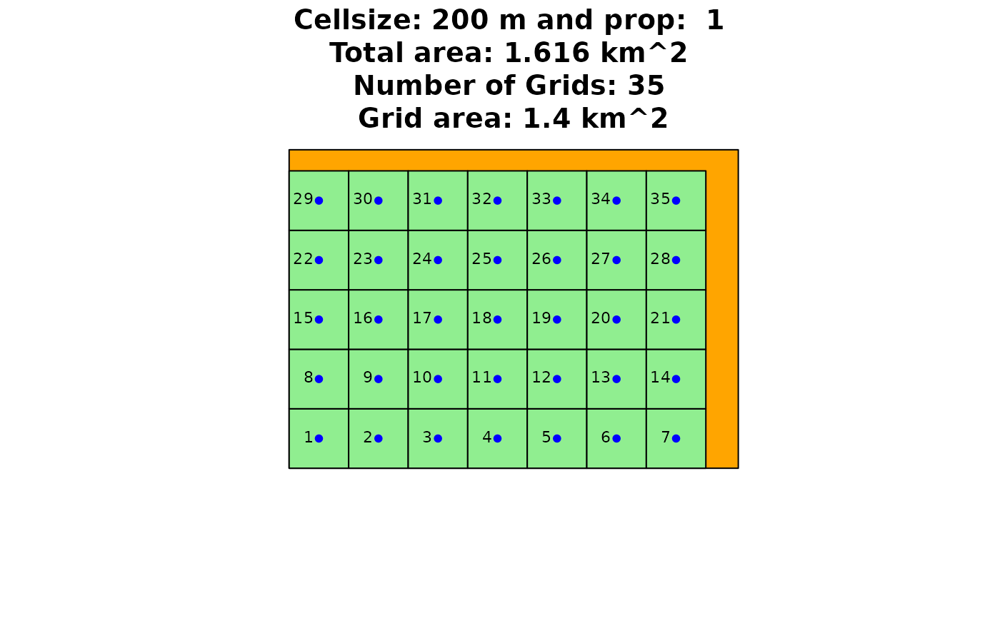
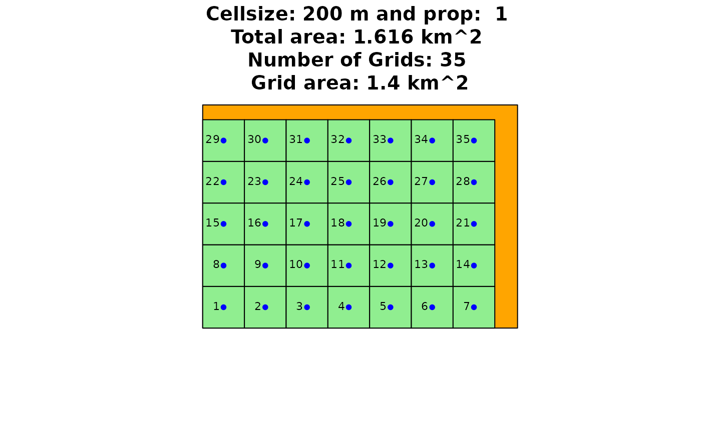

Create nStart random sub-selections from the indexed
grid and assign binary variable 1 to selected grids. This function
initiates the genetic algorithm with a first random population and will
only be needed in the first iteration.
Arguments
- Grid
The data.frame output of
grid_area" function, with X and Y coordinates and Grid cell IDs.- n
A numeric value indicating the amount of required turbines.
- nStart
A numeric indicating the amount of randomly generated initial individuals. Default is 100.
Value
Returns a list of nStart initial individuals, each consisting
of n turbines. Resulting list has the x and y coordinates, the grid
cell ID and a binary variable of 1, indicating a turbine in the grid cell.
See also
Other Genetic Algorithm Functions:
crossover(),
fitness(),
genetic_algorithm(),
mutation(),
selection(),
trimton(),
windfarmGA()
Examples
library(sf)
## Exemplary input Polygon with 2km x 2km:
Polygon1 <- sf::st_as_sf(sf::st_sfc(
sf::st_polygon(list(cbind(
c(4498482, 4498482, 4499991, 4499991, 4498482),
c(2668272, 2669343, 2669343, 2668272, 2668272)))),
crs = 3035
))
Grid <- grid_area(Polygon1, 200, 1, TRUE)
 
## Create 5 individuals with 10 wind turbines each.
firstPop <- init_population(Grid = Grid[[1]], n = 10, nStart = 5)

## Create 5 individuals with 10 wind turbines each.
firstPop <- init_population(Grid = Grid[[1]], n = 10, nStart = 5)